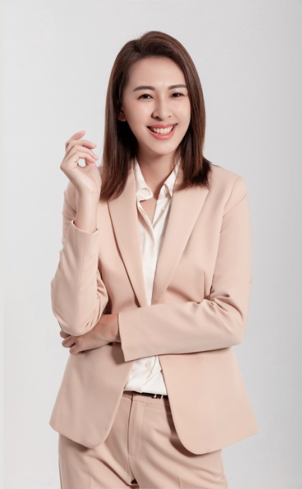
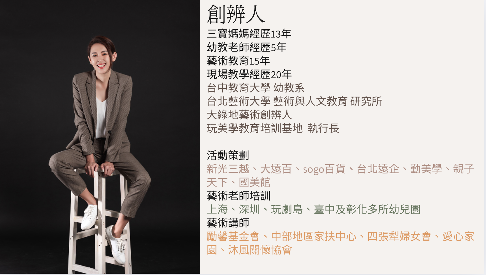

我們相信，好的教育不應該被埋沒，好的家長也不應該孤單摸索。
About Being Perfect
讓好的教育找到好的家長，讓好的師資找到好的舞台
玩美學 Being Perfect 是一個教育共生平台，致力於整合優質師資、課程內容與家長需求。我們協助家長更有效率地找到值得信任的教育資源，也陪伴教育工作者將專業內容轉化為可被理解、可被報名、可持續發展的課程服務。

Brand Belief
品牌理念
教育現場裡，有許多具備專業與熱情的師資，卻缺乏被看見、被整理、被推廣的系統；同時，也有許多家長重視孩子的學習與成長，卻需要花費大量時間判斷什麼才是真正適合的教育選擇。
玩美學存在的目的，是成為這兩端之間的橋樑。我們不只是刊登課程資訊，而是透過內容整理、師資定位、課程企劃與社群信任，讓教育資源被更清楚地理解，也讓家長能更安心地做出選擇。
Education Ecosystem
教育共生圈概念
第一共生｜師資 × 家長
老師因為被家長理解與信任，而有了發揮專業的舞台；家長也因為遇見合適的老師，而在教育選擇上有了方向。
第二共生｜品牌 × 社群
玩美學因為社群的信任而成立，也透過持續篩選、整理與傳遞教育內容，讓重視教育的家庭、師資與夥伴聚集在同一個系統裡。
第三共生｜內容 × 影響力
好的課程內容能累積信任與影響力，而穩定的影響力又能吸引更多優質師資與教育資源加入。
Difference
和一般課程平台的不同
玩美學不是單純的課程列表，也不是只提供報名入口的平台。一般課程平台多半聚焦在資訊曝光與流量導入，但玩美學更重視課程背後的教育價值、師資定位與長期經營。
對家長而言，玩美學協助降低選擇成本，讓教育資源不再只是零散資訊，而是經過整理與信任建構的選擇。
對師資與教育夥伴而言，玩美學提供的不只是曝光，而是陪伴專業落地的系統：從課程定位、內容包裝、招生溝通到社群經營，讓教育者能更專注在教學本身。

Founder
創辦人介紹
玩美學由花花老師發起。她長期深耕教育現場，擁有幼教、藝術教育、活動策劃與師資培訓經驗，也是三寶媽媽。
從幼教現場到教育推廣，從家長溝通到師資培訓，她累積了超過 20 年第一線教學與教育經營經驗。過去曾參與百貨、親子品牌、教育機構與公益單位的活動策劃與講師合作，也曾在多地推動藝術老師培訓。
玩美學教育培訓基地 執行長
大綠地藝術創辦人
教育共生平台發起人
教育願景
玩美學的願景，是建立一個能讓教育資源良性循環的共生平台。讓好的教育內容被清楚整理，讓專業師資被正確理解，也讓家長能在更有信任基礎的環境中做出選擇。
了解教育夥伴